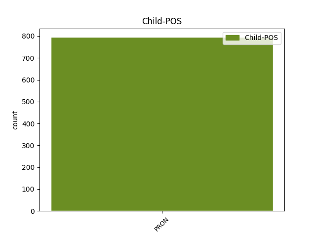

Distribution of features within this leaf

Agreement Rules sorted by frequency.
- When the dependent token is the subject(subj) of the head token, and the dependent token is PRON.
1 چیف _ _ _ _ 0 _ _ _
2 منسٹر _ _ _ _ 0 _ _ _
3 نے _ _ _ _ 0 _ _ _
4 کہا _ _ _ _ 0 _ _ _
5 کہ _ _ _ _ 0 _ _ _
6 انہیں یہ PRON PRP Case=Acc,Dat|Number=Sing|Person=3|Polite=Form|PronType=Prs 17 subj _ ChunkId=NP2|ChunkType=head|Tam=ko|Vib=کو
7 وزیر _ _ _ _ 0 _ _ _
8 اعظم _ _ _ _ 0 _ _ _
9 سے _ _ _ _ 0 _ _ _
10 اس _ _ _ _ 0 _ _ _
11 طرح _ _ _ _ 0 _ _ _
12 کے _ _ _ _ 0 _ _ _
13 ریمارک _ _ _ _ 0 _ _ _
14 کی _ _ _ _ 0 _ _ _
15 امید _ _ _ _ 0 _ _ _
16 نہیں _ _ _ _ 0 _ _ _
17 تھی تھا AUX VM Gender=Fem|Mood=Ind|Number=Sing|Person=3|Tense=Past|VerbForm=Fin|Voice=Act 0 _ _ _
18 ۔ _ _ _ _ 0 _ _ _
1 کانگریسی _ _ _ _ 0 _ _ _
2 مبصرین _ _ _ _ 0 _ _ _
3 کا _ _ _ _ 0 _ _ _
4 کہنا _ _ _ _ 0 _ _ _
5 ہے _ _ _ _ 0 _ _ _
6 کہ _ _ _ _ 0 _ _ _
7 تبدیل_شدہ _ _ _ _ 0 _ _ _
8 لفظ _ _ _ _ 0 _ _ _
9 کا _ _ _ _ 0 _ _ _
10 مفہوم _ _ _ _ 0 _ _ _
11 بھی _ _ _ _ 0 _ _ _
12 تقریباً _ _ _ _ 0 _ _ _
13 وہی وہی PRON DEM Case=Nom|Number=Sing|Person=3|PronType=Dem 14 comp:pred _ AltTag=PRON-DET|ChunkId=NP4|ChunkType=head
14 ہے ہے AUX VM Mood=Ind|Number=Sing|Person=3|Tense=Pres|VerbForm=Fin|Voice=Act 0 _ _ _
15 ۔ _ _ _ _ 0 _ _ _
1 کانگریس _ _ _ _ 0 _ _ _
2 کی _ _ _ _ 0 _ _ _
3 رکن _ _ _ _ 0 _ _ _
4 اسمبلی _ _ _ _ 0 _ _ _
5 نے _ _ _ _ 0 _ _ _
6 ان وہ PRON PRP Case=Acc|Number=Sing|Person=3|Polite=Form|PronType=Prs 7 comp:obj _ ChunkId=NP4|ChunkType=head|Tam=0|Vib=0
7 کے کا ADP PSP AdpType=Post|Case=Acc|Gender=Masc|Number=Sing|Person=3|Polite=Form 0 _ _ _
8 شوہر _ _ _ _ 0 _ _ _
9 ایم _ _ _ _ 0 _ _ _
10 ایل _ _ _ _ 0 _ _ _
11 سی _ _ _ _ 0 _ _ _
12 مسٹر _ _ _ _ 0 _ _ _
13 کونڈا _ _ _ _ 0 _ _ _
14 مرلی _ _ _ _ 0 _ _ _
15 کی _ _ _ _ 0 _ _ _
16 سیکوریٹی _ _ _ _ 0 _ _ _
17 گھٹا _ _ _ _ 0 _ _ _
18 دینے _ _ _ _ 0 _ _ _
19 کی _ _ _ _ 0 _ _ _
20 سخت _ _ _ _ 0 _ _ _
21 مذمت _ _ _ _ 0 _ _ _
22 کرتے _ _ _ _ 0 _ _ _
23 ہوئے _ _ _ _ 0 _ _ _
24 کہا _ _ _ _ 0 _ _ _
25 کہ _ _ _ _ 0 _ _ _
26 اگر _ _ _ _ 0 _ _ _
27 ان _ _ _ _ 0 _ _ _
28 کے _ _ _ _ 0 _ _ _
29 شوہر _ _ _ _ 0 _ _ _
30 کو _ _ _ _ 0 _ _ _
31 کوئی _ _ _ _ 0 _ _ _
32 نقصان _ _ _ _ 0 _ _ _
33 پہونچتا _ _ _ _ 0 _ _ _
34 ہے _ _ _ _ 0 _ _ _
35 تو _ _ _ _ 0 _ _ _
36 اس _ _ _ _ 0 _ _ _
37 کی _ _ _ _ 0 _ _ _
38 ذمہ_داری _ _ _ _ 0 _ _ _
39 صدر _ _ _ _ 0 _ _ _
40 کانگریس _ _ _ _ 0 _ _ _
41 سونیا _ _ _ _ 0 _ _ _
42 گاندھی _ _ _ _ 0 _ _ _
43 کے _ _ _ _ 0 _ _ _
44 ساتھ _ _ _ _ 0 _ _ _
45 ساتھ _ _ _ _ 0 _ _ _
46 ریاستی _ _ _ _ 0 _ _ _
47 حکومت _ _ _ _ 0 _ _ _
48 پر _ _ _ _ 0 _ _ _
49 عائد _ _ _ _ 0 _ _ _
50 ہوگی _ _ _ _ 0 _ _ _
51 ۔ _ _ _ _ 0 _ _ _
1 مسٹر _ _ _ _ 0 _ _ _
2 بھٹاچارجی _ _ _ _ 0 _ _ _
3 نے _ _ _ _ 0 _ _ _
4 یہاں _ _ _ _ 0 _ _ _
5 صحافت _ _ _ _ 0 _ _ _
6 سے _ _ _ _ 0 _ _ _
7 ملاقات _ _ _ _ 0 _ _ _
8 پروگرام _ _ _ _ 0 _ _ _
9 مےں _ _ _ _ 0 _ _ _
10 حصہ _ _ _ _ 0 _ _ _
11 لیتے _ _ _ _ 0 _ _ _
12 ہوئے _ _ _ _ 0 _ _ _
13 کہا _ _ _ _ 0 _ _ _
14 کہ _ _ _ _ 0 _ _ _
15 انہیں _ _ _ _ 0 _ _ _
16 وزیر _ _ _ _ 0 _ _ _
17 اعظم _ _ _ _ 0 _ _ _
18 نے _ _ _ _ 0 _ _ _
19 کل _ _ _ _ 0 _ _ _
20 جو جو PRON PRP Case=Nom|Number=Sing|Person=3|PronType=Prs 21 udep _ ChunkId=NP8|ChunkType=child|Tam=0|Vib=0
21 بیان بیان NOUN NN Case=Nom|Gender=Masc|Number=Sing|Person=3 0 _ _ _
22 دیا _ _ _ _ 0 _ _ _
23 ہے _ _ _ _ 0 _ _ _
24 اس _ _ _ _ 0 _ _ _
25 پر _ _ _ _ 0 _ _ _
26 حیرت _ _ _ _ 0 _ _ _
27 ہوئی _ _ _ _ 0 _ _ _
28 ہے _ _ _ _ 0 _ _ _
29 ۔ _ _ _ _ 0 _ _ _
1 ہیگ _ _ _ _ 0 _ _ _
2 نے _ _ _ _ 0 _ _ _
3 بتایا _ _ _ _ 0 _ _ _
4 کہ _ _ _ _ 0 _ _ _
5 برطانوی _ _ _ _ 0 _ _ _
6 فوجی _ _ _ _ 0 _ _ _
7 افسران _ _ _ _ 0 _ _ _
8 اپوزیشن _ _ _ _ 0 _ _ _
9 کے _ _ _ _ 0 _ _ _
10 جنگجوؤں _ _ _ _ 0 _ _ _
11 کو _ _ _ _ 0 _ _ _
12 اپنی _ _ _ _ 0 _ _ _
13 تنظیم _ _ _ _ 0 _ _ _
14 مواصلات _ _ _ _ 0 _ _ _
15 اور _ _ _ _ 0 _ _ _
16 لاجسٹک _ _ _ _ 0 _ _ _
17 کو _ _ _ _ 0 _ _ _
18 بہتر _ _ _ _ 0 _ _ _
19 بنانے _ _ _ _ 0 _ _ _
20 کے _ _ _ _ 0 _ _ _
21 لیے _ _ _ _ 0 _ _ _
22 مشورے _ _ _ _ 0 _ _ _
23 دیںگے _ _ _ _ 0 _ _ _
24 لیکن _ _ _ _ 0 _ _ _
25 وہ _ _ _ _ 0 _ _ _
26 انھیں وہ PRON PRP Case=Acc,Dat|Number=Sing|Person=3|Polite=Form|PronType=Prs 32 comp:obl _ ChunkId=NP11|ChunkType=head|Tam=ko|Vib=کو
27 اسلحہ _ _ _ _ 0 _ _ _
28 یا _ _ _ _ 0 _ _ _
29 تربیت _ _ _ _ 0 _ _ _
30 فراہم _ _ _ _ 0 _ _ _
31 نہیں _ _ _ _ 0 _ _ _
32 کریںگے کر VERB VM Mood=Ind|Number=Plur|Person=3|Tense=Fut|VerbForm=Fin|Voice=Act 0 _ _ _
33 ۔ _ _ _ _ 0 _ _ _
1 اُس _ _ _ _ 0 _ _ _
2 کے _ _ _ _ 0 _ _ _
3 علاوہ _ _ _ _ 0 _ _ _
4 بھی _ _ _ _ 0 _ _ _
5 کوئی کوئی PRON PRP Case=Nom|Number=Sing|Person=3|PronType=Prs 7 unk _ ChunkId=NP2|ChunkType=child|Tam=0|Vib=0
6 معقول _ _ _ _ 0 _ _ _
7 منصوبہ منصوبہ NOUN NN Case=Nom|Gender=Masc|Number=Sing|Person=3 0 _ _ _
8 پیش _ _ _ _ 0 _ _ _
9 کئے _ _ _ _ 0 _ _ _
10 جانے _ _ _ _ 0 _ _ _
11 پر _ _ _ _ 0 _ _ _
12 اُس _ _ _ _ 0 _ _ _
13 کے _ _ _ _ 0 _ _ _
14 لیے _ _ _ _ 0 _ _ _
15 فنڈس _ _ _ _ 0 _ _ _
16 کی _ _ _ _ 0 _ _ _
17 منظوری _ _ _ _ 0 _ _ _
18 دی _ _ _ _ 0 _ _ _
19 جائےگی _ _ _ _ 0 _ _ _
20 چونکہ _ _ _ _ 0 _ _ _
21 کروڑہا _ _ _ _ 0 _ _ _
22 روپئے _ _ _ _ 0 _ _ _
23 موجود _ _ _ _ 0 _ _ _
24 ہیں _ _ _ _ 0 _ _ _
25 ۔ _ _ _ _ 0 _ _ _
1 اُنھوں _ _ _ _ 0 _ _ _
2 نے _ _ _ _ 0 _ _ _
3 کریم _ _ _ _ 0 _ _ _
4 نگر _ _ _ _ 0 _ _ _
5 مےں _ _ _ _ 0 _ _ _
6 گزشتہ _ _ _ _ 0 _ _ _
7 ایام _ _ _ _ 0 _ _ _
8 مےں _ _ _ _ 0 _ _ _
9 بدبختانہ _ _ _ _ 0 _ _ _
10 واقعات _ _ _ _ 0 _ _ _
11 پر _ _ _ _ 0 _ _ _
12 افسوس _ _ _ _ 0 _ _ _
13 کا _ _ _ _ 0 _ _ _
14 اظہار _ _ _ _ 0 _ _ _
15 کیا _ _ _ _ 0 _ _ _
16 اور _ _ _ _ 0 _ _ _
17 کہا _ _ _ _ 0 _ _ _
18 کہ _ _ _ _ 0 _ _ _
19 ہماری _ _ _ _ 0 _ _ _
20 پارٹی _ _ _ _ 0 _ _ _
21 مسلمانوں _ _ _ _ 0 _ _ _
22 کے _ _ _ _ 0 _ _ _
23 ساتھ _ _ _ _ 0 _ _ _
24 ہے _ _ _ _ 0 _ _ _
25 اور _ _ _ _ 0 _ _ _
26 اُن _ _ _ _ 0 _ _ _
27 کے _ _ _ _ 0 _ _ _
28 ساتھ _ _ _ _ 0 _ _ _
29 کوئی کوئی PRON PRP Case=Nom|Number=Sing|Person=3|PronType=Prs 33 compound _ ChunkId=NP11|ChunkType=child|Tam=0|Vib=0
30 بھی _ _ _ _ 0 _ _ _
31 ناانصافی _ _ _ _ 0 _ _ _
32 نہیں _ _ _ _ 0 _ _ _
33 ہوگی ہو VERB VM Gender=Fem|Number=Sing|Person=3|Voice=Act 0 _ _ _
34 ۔ _ _ _ _ 0 _ _ _
1 یہ یہ PRON PRP Case=Nom|Number=Sing|Person=3|PronType=Prs 3 punct _ ChunkId=NP|ChunkType=child|Tam=0|Vib=0
2 بھی _ _ _ _ 0 _ _ _
3 شرط شرط NOUN NN Case=Nom|Gender=Masc|Number=Sing|Person=3 0 _ _ _
4 عائد _ _ _ _ 0 _ _ _
5 کی _ _ _ _ 0 _ _ _
6 گئی _ _ _ _ 0 _ _ _
7 ہے _ _ _ _ 0 _ _ _
8 کہ _ _ _ _ 0 _ _ _
9 وہ _ _ _ _ 0 _ _ _
10 دہشت_گردوں _ _ _ _ 0 _ _ _
11 کے _ _ _ _ 0 _ _ _
12 ٹریننگ _ _ _ _ 0 _ _ _
13 انفرااسٹرکچر _ _ _ _ 0 _ _ _
14 کو _ _ _ _ 0 _ _ _
15 برخاست _ _ _ _ 0 _ _ _
16 کرے _ _ _ _ 0 _ _ _
17 اور _ _ _ _ 0 _ _ _
18 انہیں _ _ _ _ 0 _ _ _
19 بین _ _ _ _ 0 _ _ _
20 الاقوامی _ _ _ _ 0 _ _ _
21 سرحدوں _ _ _ _ 0 _ _ _
22 کے _ _ _ _ 0 _ _ _
23 پار _ _ _ _ 0 _ _ _
24 حملے _ _ _ _ 0 _ _ _
25 کرنے _ _ _ _ 0 _ _ _
26 اور _ _ _ _ 0 _ _ _
27 اپنی _ _ _ _ 0 _ _ _
28 سرگرمیاں _ _ _ _ 0 _ _ _
29 جاری _ _ _ _ 0 _ _ _
30 رکھنے _ _ _ _ 0 _ _ _
31 کی _ _ _ _ 0 _ _ _
32 اجازت _ _ _ _ 0 _ _ _
33 نہ _ _ _ _ 0 _ _ _
34 دے _ _ _ _ 0 _ _ _
35 ۔ _ _ _ _ 0 _ _ _
1 جنہوں _ _ _ _ 0 _ _ _
2 نے _ _ _ _ 0 _ _ _
3 بیرونی _ _ _ _ 0 _ _ _
4 بینکوں _ _ _ _ 0 _ _ _
5 مےں _ _ _ _ 0 _ _ _
6 کالا _ _ _ _ 0 _ _ _
7 دھن _ _ _ _ 0 _ _ _
8 پوشیدہ _ _ _ _ 0 _ _ _
9 رکھا _ _ _ _ 0 _ _ _
10 ہے _ _ _ _ 0 _ _ _
11 , _ _ _ _ 0 _ _ _
12 ان _ _ _ _ 0 _ _ _
13 افراد _ _ _ _ 0 _ _ _
14 مےں _ _ _ _ 0 _ _ _
15 سے _ _ _ _ 0 _ _ _
16 ایسی _ _ _ _ 0 _ _ _
17 کوئی کوئی PRON PRP Case=Nom|Number=Plur|Person=3|PronType=Prs 18 det _ ChunkId=NP5|ChunkType=child|Tam=0|Vib=ْ
18 اتھاریٹی اتھاریٹی NOUN NN Case=Acc|Gender=Masc|Number=Sing|Person=3 0 _ _ _
19 کی _ _ _ _ 0 _ _ _
20 حامل _ _ _ _ 0 _ _ _
21 شخصیت _ _ _ _ 0 _ _ _
22 کے _ _ _ _ 0 _ _ _
23 بارے _ _ _ _ 0 _ _ _
24 مےں _ _ _ _ 0 _ _ _
25 بھی _ _ _ _ 0 _ _ _
26 ایسی _ _ _ _ 0 _ _ _
27 اطلاع _ _ _ _ 0 _ _ _
28 نہیں _ _ _ _ 0 _ _ _
29 ہے _ _ _ _ 0 _ _ _
30 اور _ _ _ _ 0 _ _ _
31 وہ _ _ _ _ 0 _ _ _
32 اس _ _ _ _ 0 _ _ _
33 بارے _ _ _ _ 0 _ _ _
34 مےں _ _ _ _ 0 _ _ _
35 معلومات _ _ _ _ 0 _ _ _
36 کو _ _ _ _ 0 _ _ _
37 برسرعام _ _ _ _ 0 _ _ _
38 لانا _ _ _ _ 0 _ _ _
39 نہیں _ _ _ _ 0 _ _ _
40 چاہتی _ _ _ _ 0 _ _ _
41 کیوں _ _ _ _ 0 _ _ _
42 کہ _ _ _ _ 0 _ _ _
43 یہ _ _ _ _ 0 _ _ _
44 کیس _ _ _ _ 0 _ _ _
45 سپریم _ _ _ _ 0 _ _ _
46 کورٹ _ _ _ _ 0 _ _ _
47 مےں _ _ _ _ 0 _ _ _
48 زیر _ _ _ _ 0 _ _ _
49 دوران _ _ _ _ 0 _ _ _
50 ہے _ _ _ _ 0 _ _ _
51 اور _ _ _ _ 0 _ _ _
52 تحقیقات _ _ _ _ 0 _ _ _
53 کا _ _ _ _ 0 _ _ _
54 عمل _ _ _ _ 0 _ _ _
55 بھی _ _ _ _ 0 _ _ _
56 جاری _ _ _ _ 0 _ _ _
57 ہے _ _ _ _ 0 _ _ _
58 ۔ _ _ _ _ 0 _ _ _
1 اور _ _ _ _ 0 _ _ _
2 طلبا _ _ _ _ 0 _ _ _
3 کے _ _ _ _ 0 _ _ _
4 سوالات _ _ _ _ 0 _ _ _
5 کے _ _ _ _ 0 _ _ _
6 تشفی_بخش _ _ _ _ 0 _ _ _
7 جوابات _ _ _ _ 0 _ _ _
8 دئیے دے VERB VM Aspect=Perf|Number=Plur|Person=3|VerbForm=Part|Voice=Act 0 _ _ _
9 جائیں_گے _ _ _ _ 0 _ _ _
10 اور _ _ _ _ 0 _ _ _
11 مزید _ _ _ _ 0 _ _ _
12 یہ یہ PRON PRP Case=Nom|Number=Sing|Person=3|PronType=Prs 8 conj _ ChunkId=NP4|ChunkType=head|Tam=0|Vib=0
13 کہ _ _ _ _ 0 _ _ _
14 ایسے _ _ _ _ 0 _ _ _
15 طلبا _ _ _ _ 0 _ _ _
16 جو _ _ _ _ 0 _ _ _
17 سابق _ _ _ _ 0 _ _ _
18 مےں _ _ _ _ 0 _ _ _
19 ایمسیٹ _ _ _ _ 0 _ _ _
20 انٹرنس _ _ _ _ 0 _ _ _
21 ٹسٹ _ _ _ _ 0 _ _ _
22 مےں _ _ _ _ 0 _ _ _
23 بہتر _ _ _ _ 0 _ _ _
24 مظاہرہ _ _ _ _ 0 _ _ _
25 کر _ _ _ _ 0 _ _ _
26 چکے _ _ _ _ 0 _ _ _
27 ہےں _ _ _ _ 0 _ _ _
28 ۔ _ _ _ _ 0 _ _ _
29 ان _ _ _ _ 0 _ _ _
30 کے _ _ _ _ 0 _ _ _
31 احساسات _ _ _ _ 0 _ _ _
32 و _ _ _ _ 0 _ _ _
33 تجربات _ _ _ _ 0 _ _ _
34 بھی _ _ _ _ 0 _ _ _
35 طلبا _ _ _ _ 0 _ _ _
36 کے _ _ _ _ 0 _ _ _
37 سامنے _ _ _ _ 0 _ _ _
38 رکھیں_گے _ _ _ _ 0 _ _ _
39 تاکہ _ _ _ _ 0 _ _ _
40 طلبا _ _ _ _ 0 _ _ _
41 کو _ _ _ _ 0 _ _ _
42 تیاری _ _ _ _ 0 _ _ _
43 کرنے _ _ _ _ 0 _ _ _
44 مےں _ _ _ _ 0 _ _ _
45 آسانی _ _ _ _ 0 _ _ _
46 ہو _ _ _ _ 0 _ _ _
47 سکے _ _ _ _ 0 _ _ _
48 ۔ _ _ _ _ 0 _ _ _
1 انہوں _ _ _ _ 0 _ _ _
2 نے _ _ _ _ 0 _ _ _
3 کہا _ _ _ _ 0 _ _ _
4 کہ _ _ _ _ 0 _ _ _
5 چیف _ _ _ _ 0 _ _ _
6 منسٹر _ _ _ _ 0 _ _ _
7 نے _ _ _ _ 0 _ _ _
8 ان _ _ _ _ 0 _ _ _
9 پر _ _ _ _ 0 _ _ _
10 جو _ _ _ _ 0 _ _ _
11 اعتماد _ _ _ _ 0 _ _ _
12 کیا _ _ _ _ 0 _ _ _
13 ہے _ _ _ _ 0 _ _ _
14 اور _ _ _ _ 0 _ _ _
15 جو جو PRON PRP Case=Nom|Number=Sing|Person=3|PronType=Prs 16 cc _ ChunkId=NP6|ChunkType=child
16 توقعات توقع NOUN NN Case=Nom|Gender=Masc|Number=Sing|Person=3 0 _ _ _
17 وابستہ _ _ _ _ 0 _ _ _
18 کی _ _ _ _ 0 _ _ _
19 ہیں _ _ _ _ 0 _ _ _
20 وہ _ _ _ _ 0 _ _ _
21 انہیں _ _ _ _ 0 _ _ _
22 پورا _ _ _ _ 0 _ _ _
23 کرنے _ _ _ _ 0 _ _ _
24 کی _ _ _ _ 0 _ _ _
25 حتی_المقدور _ _ _ _ 0 _ _ _
26 کوشش _ _ _ _ 0 _ _ _
27 کریں _ _ _ _ 0 _ _ _
28 گے _ _ _ _ 0 _ _ _
29 ۔ _ _ _ _ 0 _ _ _
1 مقامی _ _ _ _ 0 _ _ _
2 جماعت _ _ _ _ 0 _ _ _
3 کے _ _ _ _ 0 _ _ _
4 اےک _ _ _ _ 0 _ _ _
5 رکن _ _ _ _ 0 _ _ _
6 اسمبلی _ _ _ _ 0 _ _ _
7 جو _ _ _ _ 0 _ _ _
8 تعمیراتی _ _ _ _ 0 _ _ _
9 کاموں _ _ _ _ 0 _ _ _
10 کی _ _ _ _ 0 _ _ _
11 نگرانی _ _ _ _ 0 _ _ _
12 کر _ _ _ _ 0 _ _ _
13 رہے _ _ _ _ 0 _ _ _
14 تھے _ _ _ _ 0 _ _ _
15 مسلم _ _ _ _ 0 _ _ _
16 نوجوان _ _ _ _ 0 _ _ _
17 اس یہ PRON DEM Case=Acc|Number=Sing|Person=3|PronType=Dem 18 dislocated _ AltTag=PRON-DET|ChunkId=FRAGP2|ChunkType=head
18 رکن رکن NOUN NN Case=Nom|Gender=Masc|Number=Sing|Person=3 0 _ _ _
19 اسمبلی _ _ _ _ 0 _ _ _
20 پر _ _ _ _ 0 _ _ _
21 برہم _ _ _ _ 0 _ _ _
22 تھے _ _ _ _ 0 _ _ _
23 اور _ _ _ _ 0 _ _ _
24 وضاحت _ _ _ _ 0 _ _ _
25 طلب _ _ _ _ 0 _ _ _
26 کرنے _ _ _ _ 0 _ _ _
27 کے _ _ _ _ 0 _ _ _
28 لیے _ _ _ _ 0 _ _ _
29 رات _ _ _ _ 0 _ _ _
30 دیر _ _ _ _ 0 _ _ _
31 گئے _ _ _ _ 0 _ _ _
32 جائے _ _ _ _ 0 _ _ _
33 مقام _ _ _ _ 0 _ _ _
34 پر _ _ _ _ 0 _ _ _
35 پہنچ _ _ _ _ 0 _ _ _
36 گئے _ _ _ _ 0 _ _ _
37 تھے _ _ _ _ 0 _ _ _
38 تاہم _ _ _ _ 0 _ _ _
39 پولیس _ _ _ _ 0 _ _ _
40 کی _ _ _ _ 0 _ _ _
41 جانب _ _ _ _ 0 _ _ _
42 سے _ _ _ _ 0 _ _ _
43 طاقت _ _ _ _ 0 _ _ _
44 کے _ _ _ _ 0 _ _ _
45 استعمال _ _ _ _ 0 _ _ _
46 سے _ _ _ _ 0 _ _ _
47 حالات _ _ _ _ 0 _ _ _
48 کشیدگی _ _ _ _ 0 _ _ _
49 کا _ _ _ _ 0 _ _ _
50 رخ _ _ _ _ 0 _ _ _
51 اختیار _ _ _ _ 0 _ _ _
52 کر _ _ _ _ 0 _ _ _
53 گئے _ _ _ _ 0 _ _ _
54 تھے _ _ _ _ 0 _ _ _
55 اور _ _ _ _ 0 _ _ _
56 پولیس _ _ _ _ 0 _ _ _
57 لاٹھی _ _ _ _ 0 _ _ _
58 چارج _ _ _ _ 0 _ _ _
59 سے _ _ _ _ 0 _ _ _
60 پتھراؤ _ _ _ _ 0 _ _ _
61 کا _ _ _ _ 0 _ _ _
62 واقعہ _ _ _ _ 0 _ _ _
63 پیش _ _ _ _ 0 _ _ _
64 آیا _ _ _ _ 0 _ _ _
65 تھا _ _ _ _ 0 _ _ _
66 ۔ _ _ _ _ 0 _ _ _
Disagree Examples:
1 23 _ _ _ _ 0 _ _ _
2 سالہ _ _ _ _ 0 _ _ _
3 سفینا _ _ _ _ 0 _ _ _
4 نے _ _ _ _ 0 _ _ _
5 کہا _ _ _ _ 0 _ _ _
6 کہ _ _ _ _ 0 _ _ _
7 سرینا _ _ _ _ 0 _ _ _
8 اپنی _ _ _ _ 0 _ _ _
9 10 _ _ _ _ 0 _ _ _
10 گرانڈ _ _ _ _ 0 _ _ _
11 سلام _ _ _ _ 0 _ _ _
12 فتوحات _ _ _ _ 0 _ _ _
13 کی _ _ _ _ 0 _ _ _
14 بنیاد _ _ _ _ 0 _ _ _
15 پر _ _ _ _ 0 _ _ _
16 خود _ _ _ _ 0 _ _ _
17 کو _ _ _ _ 0 _ _ _
18 نمبر _ _ _ _ 0 _ _ _
19 ون _ _ _ _ 0 _ _ _
20 قرار _ _ _ _ 0 _ _ _
21 دے _ _ _ _ 0 _ _ _
22 رہی _ _ _ _ 0 _ _ _
23 ہیں _ _ _ _ 0 _ _ _
24 لیکن _ _ _ _ 0 _ _ _
25 عمر _ _ _ _ 0 _ _ _
26 میں _ _ _ _ 0 _ _ _
27 وہ _ _ _ _ 0 _ _ _
28 مجھ مجھ PRON PRP Case=Acc|Number=Sing|Person=1|PronType=Prs 31 comp:pred _ ChunkId=NP11|ChunkType=head|Tam=0|Vib=0
29 سے _ _ _ _ 0 _ _ _
30 بڑی _ _ _ _ 0 _ _ _
31 ہیں ہے AUX VM Gender=Masc|Mood=Ind|Number=Sing|Person=3|Polite=Form|Tense=Pres|VerbForm=Fin|Voice=Act 0 _ _ _
32 اور _ _ _ _ 0 _ _ _
33 تجربہ_کار _ _ _ _ 0 _ _ _
34 بھی _ _ _ _ 0 _ _ _
35 ہیں _ _ _ _ 0 _ _ _
36 تو _ _ _ _ 0 _ _ _
37 چلیے _ _ _ _ 0 _ _ _
38 دیکھتے _ _ _ _ 0 _ _ _
39 ہیں _ _ _ _ 0 _ _ _
40 کہ _ _ _ _ 0 _ _ _
41 جب _ _ _ _ 0 _ _ _
42 میں _ _ _ _ 0 _ _ _
43 ان _ _ _ _ 0 _ _ _
44 کی _ _ _ _ 0 _ _ _
45 عمر _ _ _ _ 0 _ _ _
46 کو _ _ _ _ 0 _ _ _
47 پہنچ _ _ _ _ 0 _ _ _
48 جاؤں _ _ _ _ 0 _ _ _
49 گی _ _ _ _ 0 _ _ _
50 تو _ _ _ _ 0 _ _ _
51 میری _ _ _ _ 0 _ _ _
52 فہرست _ _ _ _ 0 _ _ _
53 میں _ _ _ _ 0 _ _ _
54 کتنی _ _ _ _ 0 _ _ _
55 فتوحات _ _ _ _ 0 _ _ _
56 درج _ _ _ _ 0 _ _ _
57 ہوتی _ _ _ _ 0 _ _ _
58 ہیں _ _ _ _ 0 _ _ _
59 ، _ _ _ _ 0 _ _ _
60 جس _ _ _ _ 0 _ _ _
61 کی _ _ _ _ 0 _ _ _
62 بنیاد _ _ _ _ 0 _ _ _
63 پر _ _ _ _ 0 _ _ _
64 نمبر _ _ _ _ 0 _ _ _
65 ایک _ _ _ _ 0 _ _ _
66 کھلاڑی _ _ _ _ 0 _ _ _
67 کا _ _ _ _ 0 _ _ _
68 فیصلہ _ _ _ _ 0 _ _ _
69 بہ_آسانی _ _ _ _ 0 _ _ _
70 کر _ _ _ _ 0 _ _ _
71 لیا _ _ _ _ 0 _ _ _
72 جائے _ _ _ _ 0 _ _ _
73 گا _ _ _ _ 0 _ _ _
74 ۔ _ _ _ _ 0 _ _ _
1 آخر _ _ _ _ 0 _ _ _
2 خالہ _ _ _ _ 0 _ _ _
3 نے _ _ _ _ 0 _ _ _
4 واپس _ _ _ _ 0 _ _ _
5 جا _ _ _ _ 0 _ _ _
6 کر _ _ _ _ 0 _ _ _
7 سَرسید _ _ _ _ 0 _ _ _
8 احمد _ _ _ _ 0 _ _ _
9 خاں _ _ _ _ 0 _ _ _
10 کو _ _ _ _ 0 _ _ _
11 تمام _ _ _ _ 0 _ _ _
12 بات _ _ _ _ 0 _ _ _
13 بتائی _ _ _ _ 0 _ _ _
14 کہ _ _ _ _ 0 _ _ _
15 جب _ _ _ _ 0 _ _ _
16 تک _ _ _ _ 0 _ _ _
17 تم _ _ _ _ 0 _ _ _
18 نوکر _ _ _ _ 0 _ _ _
19 سے _ _ _ _ 0 _ _ _
20 معافی _ _ _ _ 0 _ _ _
21 نہیں _ _ _ _ 0 _ _ _
22 مانگوگے _ _ _ _ 0 _ _ _
23 , _ _ _ _ 0 _ _ _
24 تمہاری _ _ _ _ 0 _ _ _
25 والدہ _ _ _ _ 0 _ _ _
26 تمہیں تم PRON PRP Case=Acc,Dat|Number=Sing|Person=2|Polite=Form|PronType=Prs 32 subj _ ChunkId=NP10|ChunkType=head|Tam=ko|Vib=کو
27 گھر _ _ _ _ 0 _ _ _
28 آنے _ _ _ _ 0 _ _ _
29 کی _ _ _ _ 0 _ _ _
30 اجازت _ _ _ _ 0 _ _ _
31 نہیں _ _ _ _ 0 _ _ _
32 دیں_گی دے VERB VM Gender=Fem|Mood=Ind|Number=Sing|Person=3|Tense=Fut|VerbForm=Fin|Voice=Act 0 _ _ _
33 ۔ _ _ _ _ 0 _ _ _
1 اس _ _ _ _ 0 _ _ _
2 مےں _ _ _ _ 0 _ _ _
3 جان _ _ _ _ 0 _ _ _
4 ڈالنے _ _ _ _ 0 _ _ _
5 سے _ _ _ _ 0 _ _ _
6 پہلے _ _ _ _ 0 _ _ _
7 مجھے مےں PRON PRP Case=Acc,Dat|Number=Sing|Person=1|PronType=Prs 10 comp:obl _ ChunkId=NP3|ChunkType=head|Tam=ko|Vib=کو
8 اتنی _ _ _ _ 0 _ _ _
9 مہلت _ _ _ _ 0 _ _ _
10 دیجئے دے VERB VM Mood=Sub|Number=Plur|Person=3|VerbForm=Fin|Voice=Act 0 _ _ _
11 کہ _ _ _ _ 0 _ _ _
12 مےں _ _ _ _ 0 _ _ _
13 اپنی _ _ _ _ 0 _ _ _
14 جان _ _ _ _ 0 _ _ _
15 بچانے _ _ _ _ 0 _ _ _
16 کے _ _ _ _ 0 _ _ _
17 لیے _ _ _ _ 0 _ _ _
18 کسی _ _ _ _ 0 _ _ _
19 درخت _ _ _ _ 0 _ _ _
20 پر _ _ _ _ 0 _ _ _
21 چڑھ _ _ _ _ 0 _ _ _
22 جاؤں _ _ _ _ 0 _ _ _
23 چنانچہ _ _ _ _ 0 _ _ _
24 وہ _ _ _ _ 0 _ _ _
25 نہایت _ _ _ _ 0 _ _ _
26 پھرتی _ _ _ _ 0 _ _ _
27 سے _ _ _ _ 0 _ _ _
28 اےک _ _ _ _ 0 _ _ _
29 درخت _ _ _ _ 0 _ _ _
30 پر _ _ _ _ 0 _ _ _
31 چڑھ _ _ _ _ 0 _ _ _
32 کر _ _ _ _ 0 _ _ _
33 اپنے _ _ _ _ 0 _ _ _
34 آپ _ _ _ _ 0 _ _ _
35 کو _ _ _ _ 0 _ _ _
36 پتوں _ _ _ _ 0 _ _ _
37 مےں _ _ _ _ 0 _ _ _
38 چھپا _ _ _ _ 0 _ _ _
39 لیا _ _ _ _ 0 _ _ _
40 ۔ _ _ _ _ 0 _ _ _
1 اس _ _ _ _ 0 _ _ _
2 نے _ _ _ _ 0 _ _ _
3 اپنے _ _ _ _ 0 _ _ _
4 ساتھیوں _ _ _ _ 0 _ _ _
5 سے _ _ _ _ 0 _ _ _
6 کہا _ _ _ _ 0 _ _ _
7 : _ _ _ _ 0 _ _ _
8 '' _ _ _ _ 0 _ _ _
9 بھائیو _ _ _ _ 0 _ _ _
10 ! _ _ _ _ 0 _ _ _
11 کیا _ _ _ _ 0 _ _ _
12 آپ آپ PRON PRP Case=Nom|Person=2|Polite=Form|PronType=Prs 14 subj _ ChunkId=NP5|ChunkType=head|Tam=0|Vib=0
13 سمجھتے _ _ _ _ 0 _ _ _
14 ہےں ہے AUX VAUX Mood=Ind|Number=Plur|Person=3|Tense=Pres|VerbForm=Fin 0 _ _ _
15 کہ _ _ _ _ 0 _ _ _
16 شیر _ _ _ _ 0 _ _ _
17 اےک _ _ _ _ 0 _ _ _
18 مہذب _ _ _ _ 0 _ _ _
19 مخلوق _ _ _ _ 0 _ _ _
20 ہے _ _ _ _ 0 _ _ _
21 جو _ _ _ _ 0 _ _ _
22 زندہ _ _ _ _ 0 _ _ _
23 ہونے _ _ _ _ 0 _ _ _
24 کے _ _ _ _ 0 _ _ _
25 ساتھ _ _ _ _ 0 _ _ _
26 ہی _ _ _ _ 0 _ _ _
27 آپ _ _ _ _ 0 _ _ _
28 لوگوں _ _ _ _ 0 _ _ _
29 کا _ _ _ _ 0 _ _ _
30 شکریہ _ _ _ _ 0 _ _ _
31 ادا _ _ _ _ 0 _ _ _
32 کرےگا _ _ _ _ 0 _ _ _
33 اور _ _ _ _ 0 _ _ _
34 عمر _ _ _ _ 0 _ _ _
35 بھر _ _ _ _ 0 _ _ _
36 آپ _ _ _ _ 0 _ _ _
37 کا _ _ _ _ 0 _ _ _
38 احسان_مند _ _ _ _ 0 _ _ _
39 ہوگا _ _ _ _ 0 _ _ _
40 بلکہ _ _ _ _ 0 _ _ _
41 شیر _ _ _ _ 0 _ _ _
42 اےک _ _ _ _ 0 _ _ _
43 نہایت _ _ _ _ 0 _ _ _
44 جنگلی _ _ _ _ 0 _ _ _
45 اور _ _ _ _ 0 _ _ _
46 ظالم _ _ _ _ 0 _ _ _
47 جانور _ _ _ _ 0 _ _ _
48 ہے _ _ _ _ 0 _ _ _
49 ۔ _ _ _ _ 0 _ _ _
1 اس _ _ _ _ 0 _ _ _
2 مےں _ _ _ _ 0 _ _ _
3 جان _ _ _ _ 0 _ _ _
4 ڈالنے _ _ _ _ 0 _ _ _
5 سے _ _ _ _ 0 _ _ _
6 پہلے _ _ _ _ 0 _ _ _
7 مجھے مےں PRON PRP Case=Acc,Dat|Number=Sing|Person=1|PronType=Prs 10 comp:obl _ ChunkId=NP3|ChunkType=head|Tam=ko|Vib=کو
8 اتنی _ _ _ _ 0 _ _ _
9 مہلت _ _ _ _ 0 _ _ _
10 دیجئے دے VERB VM Mood=Sub|Number=Plur|Person=3|VerbForm=Fin|Voice=Act 0 _ _ _
11 کہ _ _ _ _ 0 _ _ _
12 مےں _ _ _ _ 0 _ _ _
13 اپنی _ _ _ _ 0 _ _ _
14 جان _ _ _ _ 0 _ _ _
15 بچانے _ _ _ _ 0 _ _ _
16 کے _ _ _ _ 0 _ _ _
17 لیے _ _ _ _ 0 _ _ _
18 کسی _ _ _ _ 0 _ _ _
19 درخت _ _ _ _ 0 _ _ _
20 پر _ _ _ _ 0 _ _ _
21 چڑھ _ _ _ _ 0 _ _ _
22 جاؤں _ _ _ _ 0 _ _ _
23 چنانچہ _ _ _ _ 0 _ _ _
24 وہ _ _ _ _ 0 _ _ _
25 نہایت _ _ _ _ 0 _ _ _
26 پھرتی _ _ _ _ 0 _ _ _
27 سے _ _ _ _ 0 _ _ _
28 اےک _ _ _ _ 0 _ _ _
29 درخت _ _ _ _ 0 _ _ _
30 پر _ _ _ _ 0 _ _ _
31 چڑھ _ _ _ _ 0 _ _ _
32 کر _ _ _ _ 0 _ _ _
33 اپنے _ _ _ _ 0 _ _ _
34 آپ _ _ _ _ 0 _ _ _
35 کو _ _ _ _ 0 _ _ _
36 پتوں _ _ _ _ 0 _ _ _
37 مےں _ _ _ _ 0 _ _ _
38 چھپا _ _ _ _ 0 _ _ _
39 لیا _ _ _ _ 0 _ _ _
40 ۔ _ _ _ _ 0 _ _ _